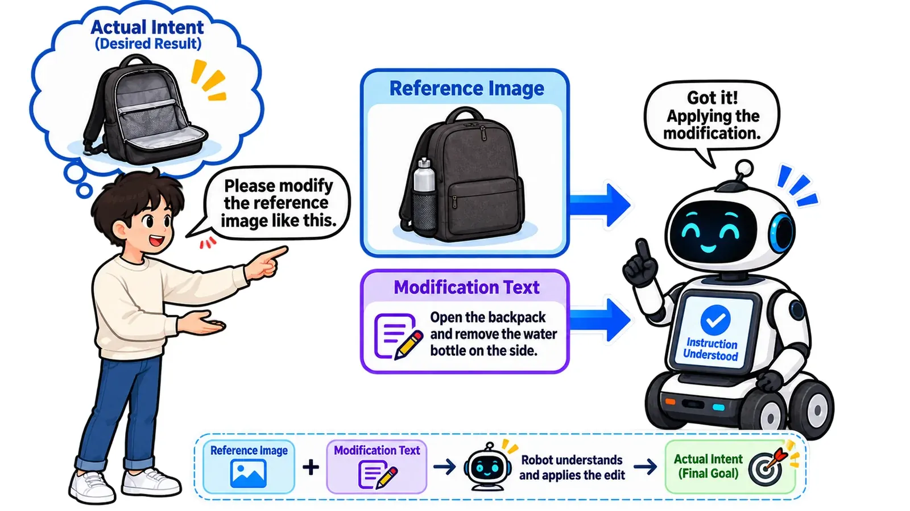

在研方向Ongoing research
组合线索目标导航（ReCoNav / CINav）Compositional clue navigation (ReCoNav / CINav)
组合可能过时的目标参考图像与相对语言修正，在未知室内环境中寻找正确实例。Combines a potentially outdated reference image with relative language edits to find the correct instance in an unknown indoor environment.

任务定义Task definition
在未知室内三维环境中，用户给出与真实目标相似但可能已过时的照片，再用语言说明外观、部件状态或上下文关系的变化。智能体需要主动探索，找到符合组合线索的物理实例并在附近停止。In an unknown indoor 3D environment, a user provides a reference photograph that may be outdated, plus language describing changes in appearance, parts, or contextual relations. The agent must explore, identify the matching physical instance, and stop nearby.
方法设想Proposed approach
简述 PPT 讨论了用视觉语言模型分析参考与当前状态的差异、生成局部编辑数据，并设计结合视觉表征、局部建图、frontier 探索和路径规划的基线。示例包括背包打开、移除水杯后与旧照片不一致的情况。The concept deck proposes using vision-language models to analyze reference-to-current differences and generate local edit data. Baselines combine visual representations, local mapping, frontier exploration, and path planning. An example changes an old backpack image by opening the bag and removing a cup.
当前阶段Current stage
材料中仍有“待补充”内容，没有最终方法或实验结果。本站将其作为在研任务记录，不列为已发表论文，也不报告性能指标。The slides still contain unfinished sections and no final method or evaluation. This page documents an active research direction without treating it as a publication or reporting performance numbers.